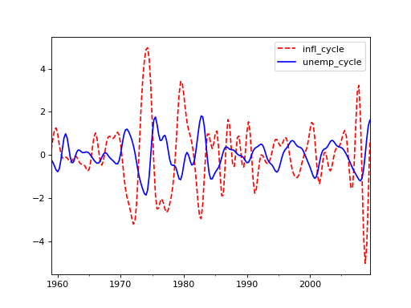

statsmodels.tsa.filters.cf_filter.cffilter¶
-
statsmodels.tsa.filters.cf_filter.cffilter(X, low=6, high=32, drift=True)[source]¶ Christiano Fitzgerald asymmetric, random walk filter
- Parameters
- Xarray-like
1 or 2d array to filter. If 2d, variables are assumed to be in columns.
- lowfloat
Minimum period of oscillations. Features below low periodicity are filtered out. Default is 6 for quarterly data, giving a 1.5 year periodicity.
- highfloat
Maximum period of oscillations. Features above high periodicity are filtered out. Default is 32 for quarterly data, giving an 8 year periodicity.
- driftbool
Whether or not to remove a trend from the data. The trend is estimated as np.arange(nobs)*(X[-1] - X[0])/(len(X)-1)
- Returns
- cyclearray
The features of X between periodicities given by low and high
- trendarray
The trend in the data with the cycles removed.
See also
statsmodels.tsa.filters.bk_filter.bkfilter,statsmodels.tsa.filters.hp_filter.hpfilter,statsmodels.tsa.seasonal.seasonal_decomposeExamples
>>> import statsmodels.api as sm >>> import pandas as pd >>> dta = sm.datasets.macrodata.load_pandas().data >>> index = pd.DatetimeIndex(start='1959Q1', end='2009Q4', freq='Q') >>> dta.set_index(index, inplace=True)
>>> cf_cycles, cf_trend = sm.tsa.filters.cffilter(dta[["infl", "unemp"]])
>>> import matplotlib.pyplot as plt >>> fig, ax = plt.subplots() >>> cf_cycles.plot(ax=ax, style=['r--', 'b-']) >>> plt.show()
(Source code, png, hires.png, pdf)

{kind=link}
{kind=link}